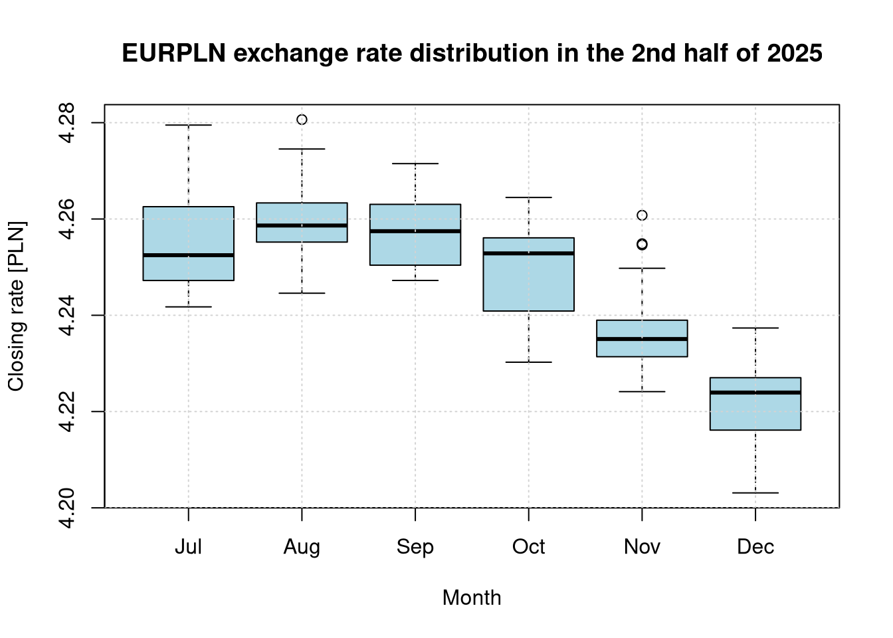
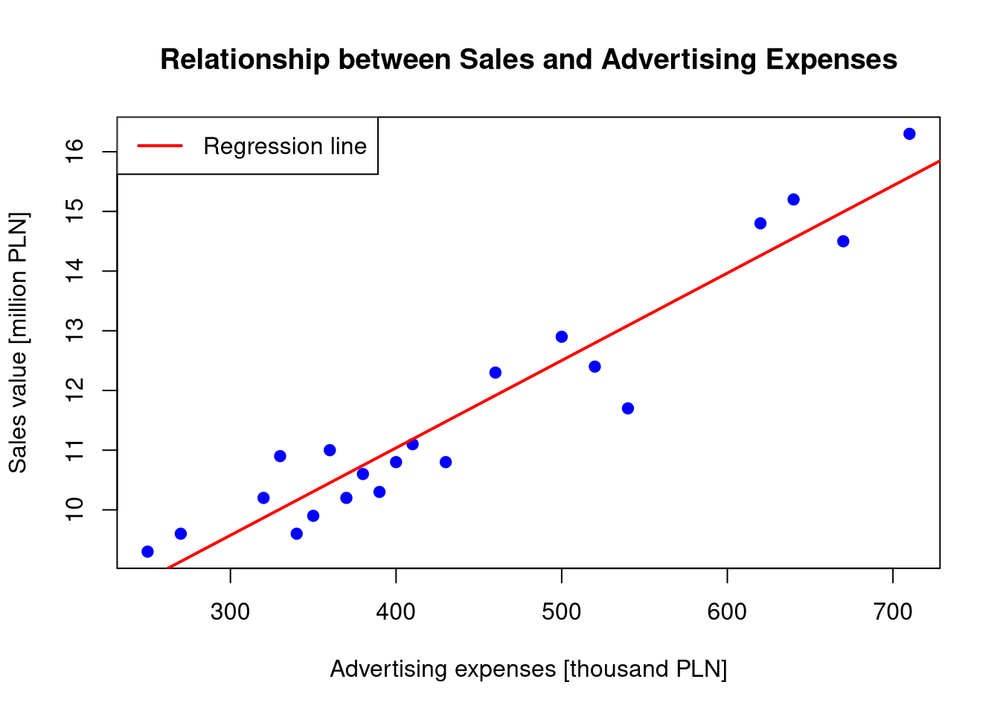
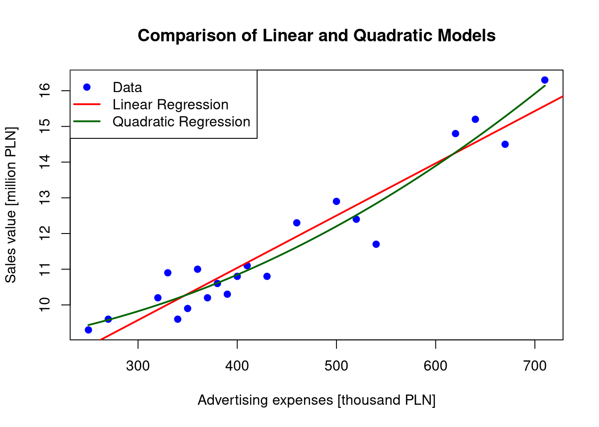

For the closing rate of the Euro (EURPLN):
- Draw box plots illustrating the exchange rate distributions for the last six months of 2025 (separately for each month from July to December 2025).
- Using the analysis of variance method, verify the hypothesis of equality of the mean exchange rates across these six months. Comment on the obtained results.
- Perform a post-hoc analysis of deviations from the mean using Tukey’s and Bonferroni’s methods. Comment on the obtained results.
- Conduct tests comparing the mean exchange rates across these six months without assuming normality of their distributions. Comment on the obtained results.
1.1 Data Preparation and Retrieval
show/hide
# Helper function to load data from stooq.plread_rates <-function(symbol, dateStart, dateEnd) {if (file.exists(".env")) readRenviron(".env") apiKey <-Sys.getenv("STOOQ_API_KEY")# Formatting dates to the YYYYMMDD format required by the stooq API d1 <-format(dateStart, "%Y%m%d") d2 <-format(dateEnd, "%Y%m%d") webLink <-paste0('https://stooq.pl/q/d/l/?s=', symbol, '&i=d&d1=', d1, '&d2=', d2, '&apikey=', apiKey) fileName <-paste0('data/', symbol, '_', d1, '_', d2, '.csv')if (!file.exists(fileName)) {download.file(webLink, fileName, quiet =TRUE) } df_symbol <-read.csv(fileName)# Map Polish column headers to English for consistencynames(df_symbol)[names(df_symbol) =="Data"] <-"Date"names(df_symbol)[names(df_symbol) =="Zamkniecie"] <-"Close" df_symbol$Date <-as.Date(df_symbol$Date)# Optional local filtering for certainty df_symbol <- df_symbol[which(df_symbol$Date >= dateStart & df_symbol$Date <= dateEnd),] df_symbol <-subset(df_symbol, select =c(Date, Close))names(df_symbol) <-c('Date', symbol) df_symbol}# Fetching data for EURPLN (July - December 2025)dateStart <-as.Date("2025-07-01")dateEnd <-as.Date("2025-12-31")df_eur <-read_rates('EURPLN', dateStart, dateEnd)# Data preparation - adding a column with the month number for groupingdf_eur$Month <-format(df_eur$Date, "%m")
1.2 Box Plots
show/hide
# Box plots for individual monthsboxplot(EURPLN ~ Month, data = df_eur, main ="EURPLN exchange rate distribution in the 2nd half of 2025",xlab ="Month", ylab ="Closing rate [PLN]",names =c("Jul", "Aug", "Sep", "Oct", "Nov", "Dec"),col ="lightblue")grid()

1.3 Analysis of Variance (ANOVA)
show/hide
# Conducting the Analysis of Variance (ANOVA)aov_res <-aov(EURPLN ~ Month, data = df_eur)summary(aov_res)
Df Sum Sq Mean Sq F value Pr(>F)
Month 5 0.02364 0.004728 51.27 <2e-16 ***
Residuals 125 0.01153 0.000092
---
Signif. codes: 0 '***' 0.001 '**' 0.01 '*' 0.05 '.' 0.1 ' ' 1
Comment: The obtained p-value \(Pr(>F) <0.001\) is significantly smaller than the assumed significance level \(\alpha = 0.05\). This provides a solid basis to reject the null hypothesis of equal mean EURPLN exchange rates in the analyzed months (July–December 2025). This result indicates that the mean exchange rates of the currency in the studied periods differed from one another in a statistically significant way. The extremely high F-statistic value confirms that the month is a factor that strongly differentiates the level of the closing exchange rate. To determine precisely which months differ from each other, a post-hoc analysis (e.g., Tukey’s test) must be conducted.
Pairwise comparisons using t tests with pooled SD
data: df_eur$EURPLN and df_eur$Month
07 08 09 10 11
08 1.0000 - - - -
09 1.0000 1.0000 - - -
10 0.1859 0.0016 0.0152 - -
11 1.3e-07 1.5e-10 3.0e-09 0.0045 -
12 < 2e-16 < 2e-16 < 2e-16 1.1e-14 9.4e-06
P value adjustment method: bonferroni
Comment: The post-hoc analysis using Tukey’s and Bonferroni’s methods yields highly consistent results and allows for a precise identification of month pairs between which significant differences occurred. The tests confirm that the summer months (July, August, September) form a cluster with a similar exchange rate level (no significant differences, Bonferroni p-value equal to 1.000). Significant shifts begin in October (which differs significantly from August and September). In turn, November and December differ in a highly significant manner (p < 0.001) from all preceding months. These findings, combined with the negative mean differences observed in Tukey’s test, clearly document a downward trend in the EURPLN rate (appreciation of the Polish złoty) across the entire studied half-year. Tukey’s plot visualizes this trend, as the majority of confidence intervals are shifted to the left of the zero line.
1.5 Kruskal-Wallis Test (Without Assuming Normality)
show/hide
# Conducting the Kruskal-Wallis testkruskal_res <-kruskal.test(EURPLN ~ Month, data = df_eur)print(kruskal_res)
Kruskal-Wallis rank sum test
data: EURPLN by Month
Kruskal-Wallis chi-squared = 79.224, df = 5, p-value = 1.22e-15
Comment: The Kruskal-Wallis test result is fully consistent with the ANOVA findings. The extremely low p-value allows us to reject the null hypothesis of equal EURPLN exchange rate distributions across the analyzed months. This confirms that the previously observed differences are not an artifact of potential deviations from the normality assumption, but rather reflect real and statistically significant changes in the currency rate level during the second half of 2025. Mirroring the ANOVA results, the high chi-squared statistic indicates a strong influence of the time factor (month) on exchange rate volatility.
2 Multiple Regression Modeling in the Forex Market
Using linear regression on data from the last four months (January to April 2026), determine the relationships of:
- the EURPLN exchange rate relative to the USDPLN, GBPPLN, AUDPLN, and JPYPLN exchange rates,
- the KGHM (KGH) stock price relative to the EURPLN, USDPLN, GBPPLN, AUDPLN, and JPYPLN exchange rates.
Evaluate the significance of each explanatory variable in the constructed models. Assume a significance level of \(\alpha = 0.05\).
2.1 Data Preparation and Retrieval
show/hide
# Setting the date range for the first four months of 2026dateStart2 <-as.Date("2026-01-01")dateEnd2 <-as.Date("2026-04-30")# List of symbols to downloadsymbols <-c('EURPLN', 'USDPLN', 'GBPPLN', 'AUDPLN', 'JPYPLN', 'KGH')# Fetching data using the previously defined read_rates functiondata_list <-lapply(symbols, function(s) read_rates(s, dateStart2, dateEnd2))# Merging all data frames into a single data frame by the Date columndf_reg <-Reduce(function(x, y) merge(x, y, by ="Date"), data_list)
2.2 Linear Regression
show/hide
# Model 1: Relationship of the EURPLN rate relative to other currenciesmodel_eur <-lm(EURPLN ~ USDPLN + GBPPLN + AUDPLN + JPYPLN, data = df_reg)summary(model_eur)
Call:
lm(formula = EURPLN ~ USDPLN + GBPPLN + AUDPLN + JPYPLN, data = df_reg)
Residuals:
Min 1Q Median 3Q Max
-0.020873 -0.004665 -0.001045 0.004684 0.018486
Coefficients:
Estimate Std. Error t value Pr(>|t|)
(Intercept) 2.24351 0.14581 15.387 < 2e-16 ***
USDPLN 0.23745 0.02930 8.105 6.38e-12 ***
GBPPLN 0.12323 0.04673 2.637 0.0101 *
AUDPLN 0.13492 0.01736 7.770 2.82e-11 ***
JPYPLN 8.33776 4.20687 1.982 0.0511 .
---
Signif. codes: 0 '***' 0.001 '**' 0.01 '*' 0.05 '.' 0.1 ' ' 1
Residual standard error: 0.00754 on 77 degrees of freedom
Multiple R-squared: 0.9255, Adjusted R-squared: 0.9217
F-statistic: 239.3 on 4 and 77 DF, p-value: < 2.2e-16
show/hide
# Model 2: Relationship of the KGHM stock price relative to exchange ratesmodel_kgh <-lm(KGH ~ EURPLN + USDPLN + GBPPLN + AUDPLN + JPYPLN, data = df_reg)summary(model_kgh)
Call:
lm(formula = KGH ~ EURPLN + USDPLN + GBPPLN + AUDPLN + JPYPLN,
data = df_reg)
Residuals:
Min 1Q Median 3Q Max
-32.195 -9.524 0.427 9.927 36.430
Coefficients:
Estimate Std. Error t value Pr(>|t|)
(Intercept) 2044.94 573.95 3.563 0.000637 ***
EURPLN -168.55 222.23 -0.758 0.450519
USDPLN -267.93 77.77 -3.445 0.000932 ***
GBPPLN 52.81 95.16 0.555 0.580513
AUDPLN 71.80 45.23 1.587 0.116558
JPYPLN -21480.08 8410.28 -2.554 0.012650 *
---
Signif. codes: 0 '***' 0.001 '**' 0.01 '*' 0.05 '.' 0.1 ' ' 1
Residual standard error: 14.7 on 76 degrees of freedom
Multiple R-squared: 0.6445, Adjusted R-squared: 0.6211
F-statistic: 27.56 on 5 and 76 DF, p-value: 8.355e-16
2.3 Significance Assessment of Variables
Commentary on the EURPLN Model: Based on the performed linear regression and the analysis of the \(p\)-values (Pr(>|t|)) at the significance level of \(\alpha = 0.05\), we can conclude that:
The variables that have a statistically significant effect on the EURPLN exchange rate are USDPLN (\(p = 6.38 \cdot 10^{-12}\)), GBPPLN (\(p = 0.0101\)), and AUDPLN (\(p = 2.82 \cdot 10^{-11}\)).
The JPYPLN exchange rate (\(p = 0.0511\)) lies on the verge of significance; however, under a strict assumption of \(\alpha = 0.05\), we do not consider it a significant variable in this specific model.
The Adjusted Coefficient of Determination (\(Adjusted R^2\)) is 0.9217, meaning that the model explains 92.17% of the variance in the Euro exchange rate relative to the Polish złoty in the analyzed period, demonstrating an excellent model fit.
Commentary on the KGH Model: Analysis of the regression model for KGHM stock indicates that:
The significant explanatory variables (\(p < 0.05\)) for the KGHM stock price are USDPLN (\(p = 0.000932\)) and JPYPLN (\(p = 0.012650\)).
For the US Dollar, a negative impact on the company’s valuation was observed (Estimate coefficient \(\approx -267.93\)). This indicates that an increase in the USDPLN rate (depreciation of the Polish złoty against the Dollar) is statistically associated with a decline in KGHM stock prices during the analyzed period.
Other currencies, including the EURPLN rate (\(p = 0.4505\)), do not show any statistically significant impact on the company’s stock price.
The Adjusted Coefficient of Determination (\(Adjusted R^2\)) of 0.6211 suggests a moderate fit of the model—currency factors explain approximately 62% of the variance in the KGHM price. This suggests a strong influence of non-currency factors, such as global copper prices or general stock market sentiment.
3 Development and Evaluation of Predictive Sales Models
The file sprzedaz.txt contains data on a company’s advertising expenses (in thousands of PLN) and the sales value of its products (in millions of PLN) across various quarters.
- Using linear regression, determine the relationship between sales value and advertising expenses. Plot the data points and the regression line on a single chart.
- Calculate the forecasted sales values if advertising expenses are 300, 500, and 700 thousand PLN. Estimate the standard deviation of the error associated with the forecasted sales values for each level of advertising expenses.
- For the data in the sprzedaz.txt file, investigate whether a quadratic relationship would provide a better model for the dependency between advertising expenses (in thousands of PLN) and sales value (in millions of PLN). Compare the values of the coefficient of determination \(R^2\) for both models. Plot the corresponding line representing this relationship on the chart containing the data and the linear regression line determined in the previous step.
3.1 Linear Regression Plot
show/hide
# Loading datasales <-read.csv("data/sprzedaz.txt")# Linear regression modellin_model <-lm(Income ~ Advert, data = sales)# Scatter plot with regression lineplot(sales$Advert, sales$Income, xlab ="Advertising expenses [thousand PLN]", ylab ="Sales value [million PLN]", main ="Relationship between Sales and Advertising Expenses",pch =19, col ="blue")abline(lin_model, col ="red", lwd =2)legend("topleft", legend ="Regression line", col ="red", lwd =2)

3.2 Forecasting and Prediction Error (300, 500, 700 thousand PLN)
show/hide
new_data <-data.frame(Advert =c(300, 500, 700))lin_pred <-predict(lin_model, newdata = new_data, se.fit =TRUE)# Calculating the standard deviation of the prediction error for an individual observation# Prediction error accounts for the mean estimation error and the residual variancese_pred_error <-sqrt(lin_pred$se.fit^2+ lin_pred$residual.scale^2)# Compiling the forecast resultsforecast_results <-data.frame(Advertising_Expenses = new_data$Advert,Forecasted_Sales = lin_pred$fit,Prediction_Error_Estimate = se_pred_error)print(forecast_results)
quad_model <-lm(Income ~ Advert +I(Advert^2), data = sales)# 1. Comparison of R^2 and Adjusted R^2sum_lin <-summary(lin_model)sum_quad <-summary(quad_model)r2_lin <- sum_lin$r.squaredr2_adj_lin <- sum_lin$adj.r.squaredr2_quad <- sum_quad$r.squaredr2_adj_quad <- sum_quad$adj.r.squared# 2. ANOVA Test - checking if the addition of the quadratic term is significanttest_anova <-anova(lin_model, quad_model)p_value_anova <- test_anova$"Pr(>F)"[2]# Displaying the comparison resultsstat_comparison <-data.frame(Model =c("Linear", "Quadratic"),R_Squared =c(r2_lin, r2_quad),Adj_R_Squared =c(r2_adj_lin, r2_adj_quad))print(stat_comparison)
Model R_Squared Adj_R_Squared
1 Linear 0.9140610 0.9095379
2 Quadratic 0.9326505 0.9251672
show/hide
cat("\nANOVA test result (p-value for change):", p_value_anova)
ANOVA test result (p-value for change): 0.03879825
show/hide
# 3. Comparative plotplot(sales$Advert, sales$Income, xlab ="Advertising expenses [thousand PLN]", ylab ="Sales value [million PLN]", main ="Comparison of Linear and Quadratic Models",pch =19, col ="blue")abline(lin_model, col ="red", lwd =2)# Adding the quadratic model curvex_grid <-seq(min(sales$Advert), max(sales$Advert), length.out =100)y_quad <-predict(quad_model, newdata =data.frame(Advert = x_grid))lines(x_grid, y_quad, col ="darkgreen", lwd =2)legend("topleft", legend =c("Data", "Linear Regression", "Quadratic Regression"), col =c("blue", "red", "darkgreen"), pch =c(19, NA, NA), lwd =c(NA, 2, 2))

3.4 Conclusions and Analysis
Forecasted Sales Values: Based on the linear model, the following sales forecasts (in millions of PLN) were determined for the given advertising expenses (in thousands of PLN): - For expenses of 300 thousand PLN: the forecast is 9.57 million PLN (standard deviation of the prediction error: 0.64).
- For expenses of 500 thousand PLN: the forecast is 12.5 million PLN (standard deviation of the prediction error: 0.63).
- For expenses of 700 thousand PLN: the forecast is 15.43 million PLN (standard deviation of the prediction error: 0.68).
Comparison and Model Selection:
To eliminate the risk of overfitting and confirm the validity of the model selection, an in-depth analysis was conducted:
Adjusted Coefficient of Determination (\(R^2\)): An increase was observed from 0.9095 (linear model) to 0.9252 (quadratic model). Since the adjusted coefficient accounts for the number of parameters, its increase unambiguously confirms that the non-linear model describes the data structure better, rather than merely fitting the noise.
ANOVA Test: Comparing both models with an F-test revealed a significant difference (\(p = 0.0388\)). Since the \(p\)-value is substantially smaller than the adopted significance level of 0.05, we reject the hypothesis that the linear model is sufficient.
Visual Conclusions: The plot confirms that the linear regression line (red) systematically deviates from the data at extreme levels of advertising expenses, whereas the quadratic curve (green) naturally tracks the slight arc formed by the data points.
Summary: All applied statistical criteria confirm that the quadratic model is more adequate and statistically justified. The higher precision of this model stems from the non-linear nature of the relationship between advertising and sales in this specific dataset.